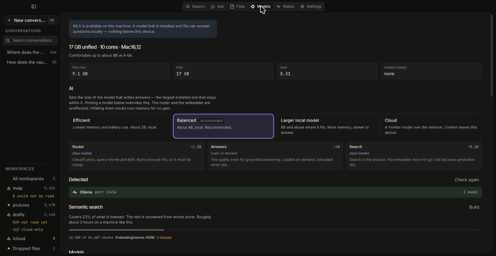

-
Get a model
Open Models. The page reads this machine's actual memory and core count and computes what fits, rather than applying a rule of thumb keyed on parameter count — it accounts for weights, the KV cache at the context length it will use, the runtime and an OS reserve, and shows you that arithmetic.
Pick a size class — Efficient, Balanced, Larger, or Cloud — or pin a specific model, which overrides the class. Each candidate shows its licence and whether commercial use is established, its download size and its repository. A model you no longer want has a Remove button that says how much disk it frees; it can be downloaded again later.

Models. Three roles run at different sizes for different reasons — the router is cheap because it runs once per file, the answerer is loaded on demand, the embedder stays loaded because search is the product. A local Ollama or LM Studio is detected if you already have one. Rendered against the repository's development fixtures. No GPU, or not a Mac? Skip all of this and point Marrow at an OpenAI-compatible endpoint instead. Search does not care either way.
-
Ask
Open Ask and type a question — the question, not keywords. Fast answers straight; Thorough lets the model reason first, and that reasoning is shown in a collapsed block labelled as the model's working: not evidence, and never cited.
While an answer is streaming you can type the next question and press return. It is queued and sent when the current answer finishes, in the same thread it was queued in — one, not a backlog you cannot see.
Conversations survive a quit and are searchable: the box above the conversation list matches across them.
-
Read the sources header before you read the answer

The header reads "2 sources · 1 not used · 4.8 KB of context", and each of those three changes how the answer should be read. Rendered against the repository's development fixtures. -
The count of sources, and how many of them are not
exact. A number recovered from a scan is not the same kind of fact as one read out of a clean file, so an answer built on inexact sources says so before you open anything. - What was excluded, and why. Files Marrow's own tools wrote are listed greyed-out under the sources — found, and deliberately not used, because a system that cites its own summary back to you has invented corroboration. Silence there would look like they were never found.
- Where the model ran. A label on every generation says whether it stayed on this device or went to a provider, and it is computed from the address that actually resolved, not from what you typed into the settings field.
-
The count of sources, and how many of them are not
-
Follow a citation to its source
Click a marker like
[E1]inside the answer: the source list opens if it was collapsed and scrolls to that entry.Then click the source itself. The citation opens the file in whatever application owns it — shift-click reveals it in Finder instead. The row keeps its line, page or cell rendered separately from the path, so truncation eats the directory and never the part that makes it a citation.
In the Search view the same thing is on the keyboard: arrow keys or j/k move the cursor and the preview follows continuously, ↵ focuses the preview, ⌘↵ hands the file to its default application, and ⇧↵ reveals it in the file manager.
-
Diagrams and pages come out as files
An answer may contain a Mermaid diagram or a small generated HTML page. Both open in a side panel. A diagram saves as SVG or PNG (rasterised at 2× so it is not a worse copy of the SVG); a generated page saves as HTML.
A generated page runs in a sealed frame with no same-origin access — the panel says so on its face: no access to your files, your index or the window around it.
Do not ask a model to do arithmetic
A model handed forty numbers as text will usually add them correctly and cannot tell you when it did not. For a spreadsheet range, compute it:
marrow table sum ~/Projects/q2.xlsx 'Q2!B4:B18' marrow table mean ~/Projects/q2.xlsx 'B4:B18'
sum, mean, min, max
and count. It uses the typed values the parser recorded and
says which cells it skipped and why. The sheet name is required when the
workbook has more than one; the file must already be indexed.
What the answer cannot do to you
Retrieved file content is assembled into a labelled envelope before it reaches the model — a per-answer unpredictable delimiter, regenerated if it collides with the content, with untrusted material never placed last. That is the mechanism behind "retrieved content never grants authority", and it is defence in depth: the refusals hold whether or not the model complies.
It is worth knowing the shape of the thing it defends against. A poisoned README in a repository you cloned is aimed at your home directory the moment a write-capable agent is pointed at the same index. That is why these defences are in a single-user project at all.
Next: serve the index to an agent over MCP → Or: add a cloud model →